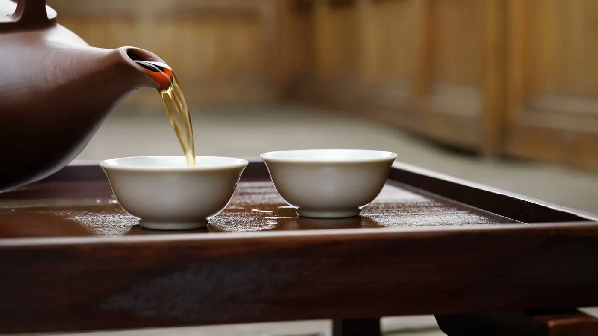
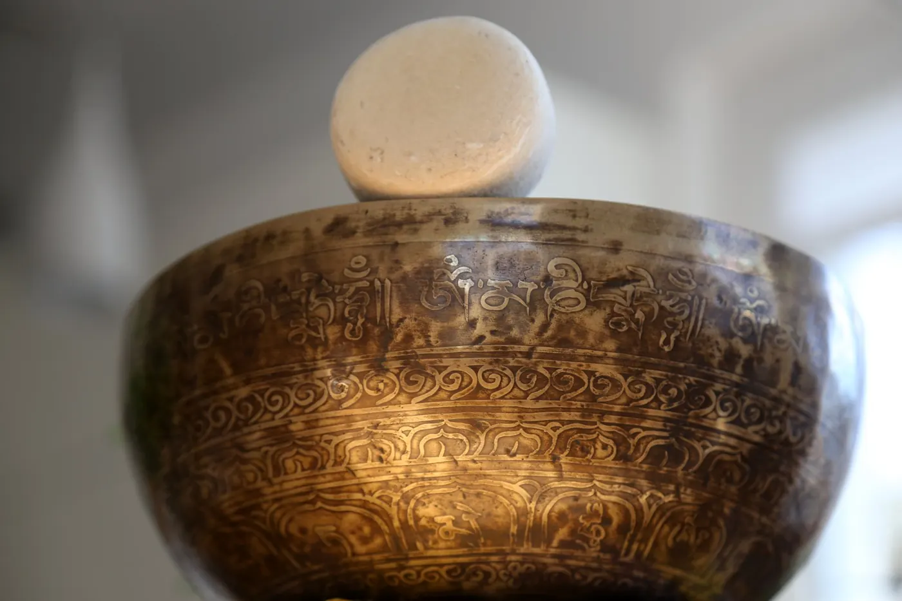

Vier Wege zu mehr Energie.Angebote in Steinberg am See bei Schwandorf
Qigong und Ernährung sind das Herz meiner Arbeit. TuiNa und Organetik ergänzen sie — je nachdem, was du brauchst.
Qigong & Meridianklopfen
Meditations-, Konzentrations- und Bewegungsform — „Arbeit mit der Energie“. Kurse in Wackersdorf, Einzelstunden auf Anfrage.
Mehr erfahrenErnährung nach TCM
Die Fünf-Elemente-Ernährung: Lebensmittel nach Geschmack und thermischer Wirkung — bekömmlich, genussvoll, für deinen Alltag.
Mehr erfahrenTuiNa
Traditionelle chinesische Körperarbeit: Drücken, Streichen, Reiben und Kneten entlang der Meridiane, mit ausgewählten Akupressurpunkten.
Mehr erfahrenOrganetik.SL
Schwingungsverfahren, bei dem du vollständig bekleidet und ohne Strom mit der Organetik-Platte verbunden bist.
Mehr erfahrenErst zuhören, dann anfangen.
Kein Programm von der Stange. Am Anfang steht ein Gespräch — daraus ergibt sich, was zu dir passt.
Kennenlernen
Ein ausführliches persönliches Gespräch: deine Bedürfnisse, deine Lebensgewohnheiten und das, was dich gerade beschäftigt.
Auswahl
Gemeinsam wählen wir passende Impulse aus Ernährung, Bewegung, Entspannung und Körperarbeit, auch mit Blick auf Stressregulation und Schlafgesundheit — Kurs, Ernährung nach TCM, TuiNa oder Organetik, einzeln oder kombiniert.
Dranbleiben
Regelmäßig üben, kleine Schritte im Alltag. Inna bleibt Ansprechpartnerin.
Meine Angebote dienen dem Wohlbefinden und der Lebenspflege. Sie sind keine Heilbehandlung, ich stelle keine Diagnosen, und sie ersetzen keinen Besuch bei Ärztin oder Arzt.

Lass uns reden — in Ruhe.
Ein Anruf oder eine kurze Nachricht genügt. Inna meldet sich persönlich bei dir zurück, und ihr schaut gemeinsam, was zu dir passt.
Kurz sagen, worum es dir geht — Kurs, Ernährung oder eine Anwendung.
Ein persönliches Gespräch: Wo stehst du, was wünschst du dir?
Kurs, Termin oder Ernährungsgespräch — Schritt für Schritt, in deinem Tempo.
Oder direkt anrufen: 0151 42548212